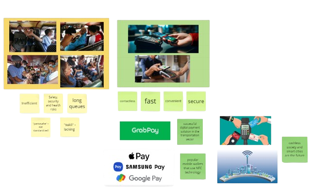

In the Philippines, public transportation serves as the lifeblood of urban and rural communities alike, facilitating the daily movement of millions of commuters. From Metro Manila alone sees staggering numbers of passengers relying on public transportation every day. Beyond the capital, similar reliance is observed in other major cities and provinces across the archipelago, where buses, jeepneys, tricycles, and other modes of transport constitute the primary means of getting around. These numbers underscore the critical role that public transportation plays in the lives of Filipinos, connecting them to work, school, markets, and essential services on a daily basis.
8.9M
everyday jeepney passengers
1.8M
everyday bus passengers
Public transportation in the Philippines faces significant challenges that hinder efficiency, safety, and accessibility for commuters and operators alike.
FareME addresses the inefficiencies and complexities of public transport fare calculations in the Philippines. Manual calculations by conductors often lead to human errors, disputes, and passenger dissatisfaction. Moreover, the application of discounts and distance-based adjustments add to the confusion. FareME uses NFC technology to automate fare calculations, providing a seamless and reliable solution for commuters.
1 Maria, the University Student:
Reason for Using FareMe: Maria relies on public transportation daily to commute to her university. She uses FareMe for its convenience and to avail student discounts on her fare. The app helps her manage her limited budget by tracking her transportation expenses closely.
2 Juan, the Working Professional:
Reason for Using FareMe: Juan commutes to work using multiple types of public transport. FareMe's unified payment system simplifies his daily commute by allowing seamless transfers between PUJs and PUVs. The expense tracking feature helps him claim transportation allowances from his employer.
3 Lola Anita, the Senior Citizen:
Reason for Using FareMe: Anita appreciates the ease of use and the discounts she receives as a senior citizen. She also values the safety aspect, as her children can monitor her travel locations in real-time, ensuring her well-being during her trips to the market or her visits to friends.
4 Raj, the Tech-Savvy Tourist:
Reason for Using FareMe: As a tourist, Raj looks for efficient and hassle-free ways to explore the Philippines. FareMe's QR code payment system and the ability to track travel expenses appeal to him, making navigation and budgeting simpler during his travels.
5 Sofia, the Entrepreneur:
Reason for Using FareMe: Sofia runs a small business and frequently travels around the city for meetings and supplies. She uses FareMe to keep a meticulous record of her travel expenses for business accounting and tax purposes. The convenience of linking the app to her business bank account is a significant plus.
6 Kevin, the Concerned Parent:
Reason for Using FareMe: With children attending schools at different locations, Kevin uses FareMe to ensure their safe commute. The app allows him to monitor his children's travel history and expenses, providing peace of mind about their safety and spending.
In creating the application, we took inspiration from the challenges in the traditional payment system of PUVs and PUJs, the technology present that serves as an inspiration to solve these problems, and the future trends.

Initial research highlights the critical role of public transportation in the Philippines, emphasizing the challenges faced by both commuters and transportation operators. Traditional payment methods present inefficiencies and safety concerns, necessitating a modern digital solution. FareME seeks to address these challenges by leveraging NFC technology to streamline fare collection and enhance the overall commuting experience.
- Market Demand: High demand for a modern, efficient payment solution due to the large volume of daily commuters (8.9 million jeepney passengers and 1.8 million bus passengers in Metro Manila alone).
- Technical Feasibility: NFC technology is mature and widely adopted, offering a reliable platform for digital payment solutions.
- Operational Feasibility: Integration with existing transportation systems may require cooperation from multiple stakeholders, including transport operators, government agencies, and technology providers.
- Financial Feasibility: Initial investment in technology development, infrastructure setup, and deployment may be significant but can be offset by potential cost savings and revenue opportunities.
- Legal and Regulatory Feasibility: Compliance with existing regulations and standards for digital payments and data security is essential.